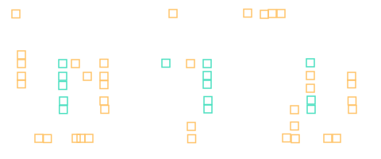
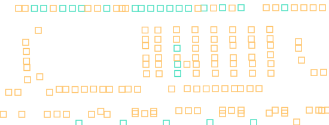
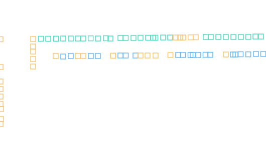
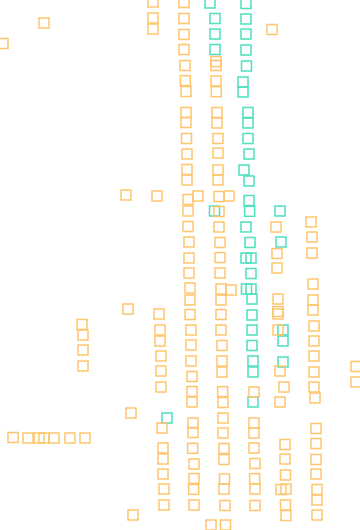

青绿＝AA落点假设；蓝＝POLY落点假设；橙＝无包围/沟道交叠/归属未知。 框为亮点定位，不代表实际孔边界。设计视图为继承全局投影，未获局部落点验收，不可据此判定连接。
仅四类小样本；不自动补齐孔，不以阵列先验代替观察，不修改已审AA/POLY。 所有CT归属和M1包围仍未知。尚未确认局部对应和同组孔列，因此不执行全区等间距吸附。 检查报告
扩散侧孔列与栅端落孔分开；不把沟道纹理当孔；观察点51。颜色仅为投影假设，所有归属待核。

六条MOS数量只作结构上下文，不据此自动补六组孔；观察点153。颜色仅为投影假设，所有归属待核。

电阻端孔与环孔分开；电阻体中部不按亮纹补孔；观察点77。颜色仅为投影假设，所有归属待核。

环连续不等于CT连续；保留真实断孔和未知；观察点192。颜色仅为投影假设，所有归属待核。
